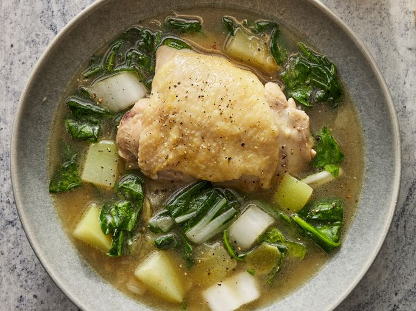

Chicken Tinola

Chicken Stew garnished with Ginger and Chayote
Tinola is an easy, one-pot soup from the Philippines. Chicken, chayote squash (or green papaya), bok choy, and spinach are simmered with fresh ginger in a savory broth that's delicious served with hot white rice.
Ingredients
- 1 Medium onion, chopped
- 2 cloves garlic, minced
- 1 (1 ½ inch) piece fresh ginger, peeled and thinly sliced
- 1 tablespoon fish sauce
- 3 pounds chicken legs and thighs
- 2 (14 ounce) cans chicken broth
- 1 chayote squash, peeled and cut into bite-sized pieces
- salt and ground black pepper to taste
- 1 head bok choy, chopped
- 1 (8 ounce) package fresh spinach, chopped
Steps
- Gather All Ingredients
- Heat Oil, Add Onion and Garlic
- Add Ginger and Fish sauce, Stir in Chickn for 5 mins
- Pour Broth, cook for 5 mins, add squash, cook for another 15 mins
- Add Bok choy and Spinach until wilted
- Enjoy!
Home